Controllers on the brush
20 Nov, revised the same day after you listened. Painting, step 3: the pedal now only joins notes, as the pluck sounds; the mod wheel rests at the bottom and loads the brush going up, plainly; a bend away from rest is a palette knife through the wet stroke; a hard strike throws drops of paint; aftertouch is as it was. Every one of them changes the strokes themselves, so the look draws what the map holds and Scan hears it. Expression (CC 11) is still the Picture amount.
Each phrase below is one performance painted three times: with the brush hearing the controller as revised, with the brush deaf to it, and as step 3 was first built. The first two differ only by what Scan reads off the paint, and the pictures by what the brush did. Scan is at 60 and the Picture amount at nought throughout, so what you hear is Scan alone.
Things to decide.
The knife, fine-tuned later. You chose the full-width knife as a starting point. How far it pushes (four of the brush’s half-widths at a whole tone), the lip’s height and the film’s thinness are one number each.
The splayed strike is parked. It was tried three ways (a fan of fingers with separate tracks, a flare
closing into the stroke, and a lab of knobs) and you went back to the drops below: “the closest one
we’ve had, and we can get this right later”. The strike lab (web/docs/labs/strike-lab/) is
where to resume: it paints with this page’s own look from stamps the core already lays.
Where spatter starts. Nothing under about a third of a full impact (velocity times Strike). At the default Strike of 50 that is a velocity of about 90 before the first drop; at Strike 100, about 45.
The wheel and pressure still do two things. In Paint the brush reads them as well as whatever Expression’s menus give them to: the wheel is still the vibrato by default. A switch could choose, if you want one.
How to read the numbers
Centroid is the brightness of what Scan reads, in harmonics: 1 is a sine, about 2 is mellow and 3 is reedy. Movement is how much it changes from one sixtieth of a second to the next; under 0.005 is a steady tone. Glow, Motion, Memory are the Picture amount’s three reads, as medians. Brush is the strokes’ width in the map’s cells (128 across), the median and the widest tenth. Paint at the end is the map’s paint summed, and how much of it is wet. The map pictures show thickness in grey and wet paint in blue; the looks are the page’s own paint view, fed the core’s strokes a sixtieth of a second at a time.
A pluck’s slow melody under the pedal
A short pluck (Tine piano’s settings, decayed to nothing in a quarter second), C E G C B G E D C at a note a second, the sustain pedal down from the start and let go at the end. Each note is silent long before the next.
Now the pedal only joins the notes into one stroke, as paint width had it: the brush lays while there is sound and the paint dries as it would, so With matches Without - a mark a note, as you heard it. Each mark is a little heavier with the pedal, since a joined stroke keeps what was left on the brush; the line between them is gone. As first built, the brush laid on through the silences and the paint stayed wet.


| Centroid | 4.23 (3.71–4.73) |
|---|---|
| Movement | 0.0001 |
| Glow / Motion / Memory | 0.04 / 0.06 / 0.00 |
| Brush, median (p90) | 3.9 (6.0) cells |
| Paint at the end | 46, 14% wet |


| Centroid | 4.15 (3.73–4.56) |
|---|---|
| Movement | 0.0001 |
| Glow / Motion / Memory | 0.00 / 0.02 / 0.00 |
| Brush, median (p90) | 3.9 (5.9) cells |
| Paint at the end | 15, 3% wet |
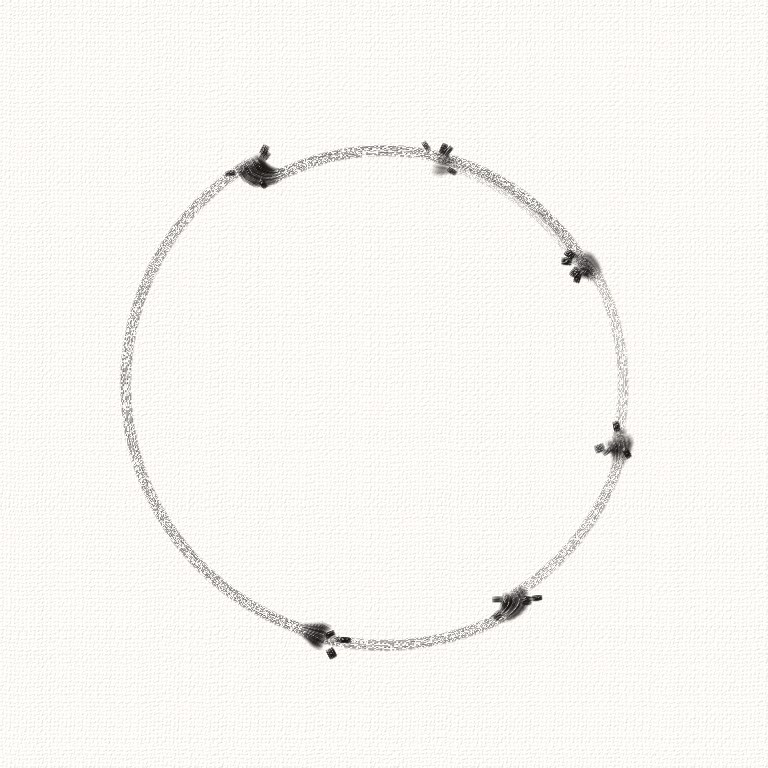

| Centroid | 3.04 (2.78–3.72) |
|---|---|
| Movement | 0.0006 |
| Glow / Motion / Memory | 0.36 / 0.09 / 0.00 |
| Brush, median (p90) | 3.8 (3.8) cells |
| Paint at the end | 92, 68% wet |
A held chord with the mod wheel swept
A slow pad, C3 G3 E4 held eight and a half seconds. The wheel starts at rest at the bottom, goes to the top over 2.5 s, stays there 2 s, and comes back to rest over 2.5 s. The wheel is also Expression’s vibrato, as it is by default, in all three.
The wheel rests at the bottom now: there the brush is exactly the plain one, and up it only adds, so the top is a loaded brush - about twice as wide and five times the paint, laid thick and wet. As first built it was read from its middle, so the same sweep painted dry and thin at the bottom, and the top was only a little heavier.


| Centroid | 1.40 (1.03–2.24) |
|---|---|
| Movement | 0.0017 |
| Glow / Motion / Memory | 0.63 / 0.86 / 0.27 |
| Brush, median (p90) | 7.9 (10.9) cells |
| Paint at the end | 2717, 13% wet |
| Drops of spatter | 3 |
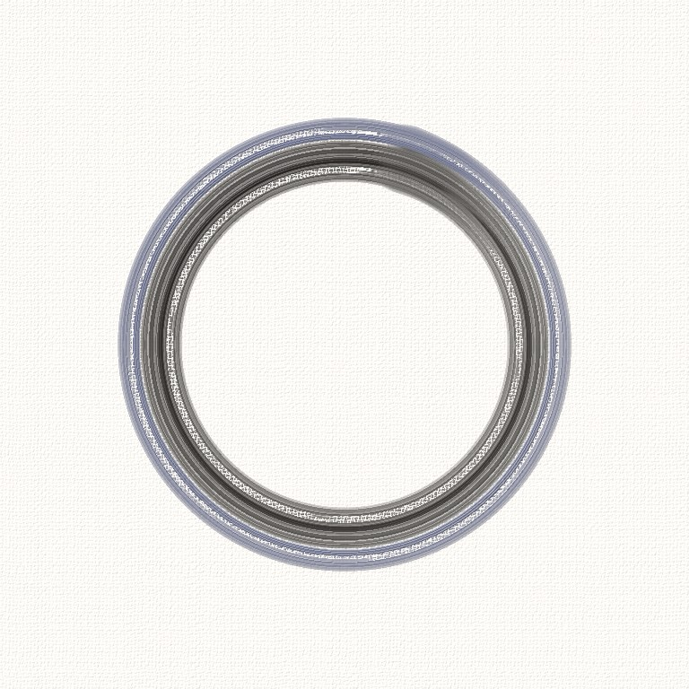
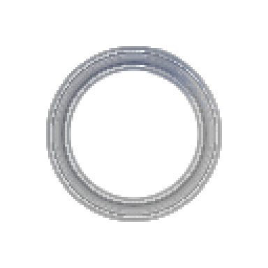
| Centroid | 1.72 (1.43–3.09) |
|---|---|
| Movement | 0.0053 |
| Glow / Motion / Memory | 0.46 / 0.26 / 0.11 |
| Brush, median (p90) | 6.0 (6.0) cells |
| Paint at the end | 632, 8% wet |
| Drops of spatter | 3 |
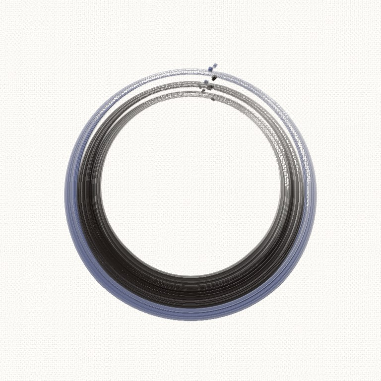
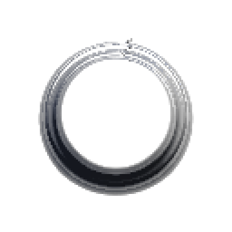
| Centroid | 1.40 (1.05–2.17) |
|---|---|
| Movement | 0.0022 |
| Glow / Motion / Memory | 0.55 / 0.39 / 0.16 |
| Brush, median (p90) | 5.6 (9.1) cells |
| Paint at the end | 1493, 10% wet |
A bend
A fifth, A3 and E4, held seven seconds on a plain tone, the bend at its usual two semitones. Up quickly (a quarter second) and back, then down slowly (a second) and back.
Two semitones move the stroke under one of the map’s cells, which nobody can see under a stroke five wide, and where the stroke sits stays the pitch’s. So a bend away from rest is a palette knife, the one you chose: it pushes the stroke’s own paint aside the way the pitch went - outward for up, inward for down - as one flat, levelled slab the stroke’s width, its grooves gone, at the stroke’s tone, with a thin patchy film where the blade started and one lip along its far edge, easing in and out along the stroke. The bend back to rest cuts nothing. A quick flick pushes further and sharper, a slow bend shorter and broader. It is in the map too, so Scan hears it. As first built the stroke moved its cell and nothing else.


| Centroid | 2.42 (1.92–3.52) |
|---|---|
| Movement | 0.0062 |
| Glow / Motion / Memory | 0.34 / 0.09 / 0.03 |
| Brush, median (p90) | 5.3 (5.5) cells |
| Paint at the end | 224, 8% wet |
| Drops of spatter | 2 |
| Pulls on the paint | 106 |
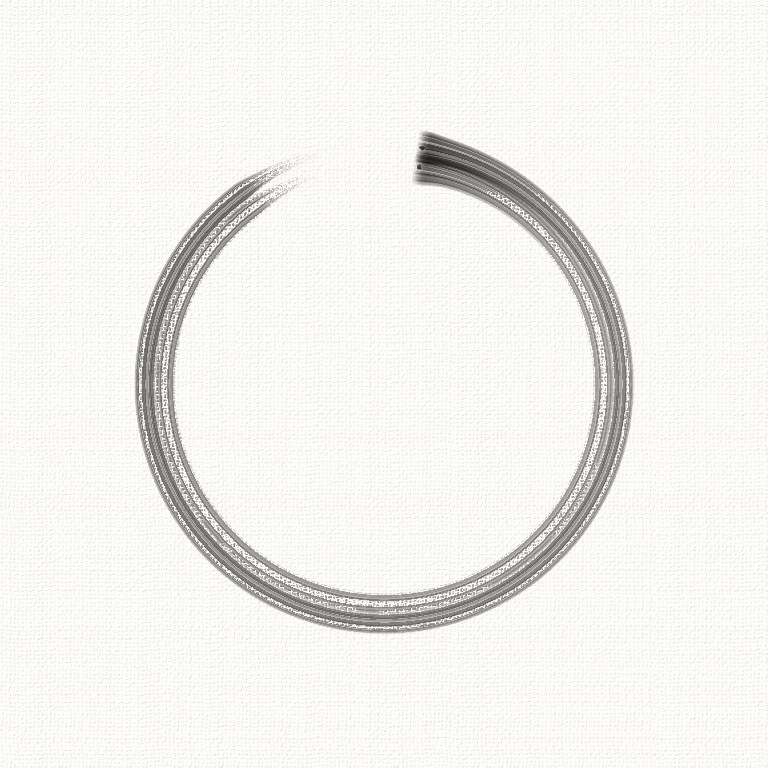

| Centroid | 2.05 (1.70–3.73) |
|---|---|
| Movement | 0.0062 |
| Glow / Motion / Memory | 0.34 / 0.09 / 0.04 |
| Brush, median (p90) | 5.3 (5.5) cells |
| Paint at the end | 222, 8% wet |
| Drops of spatter | 2 |
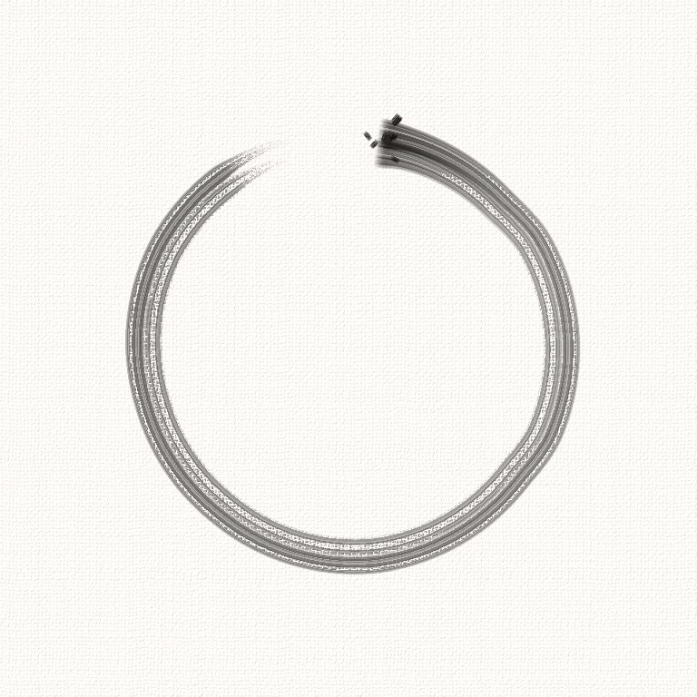
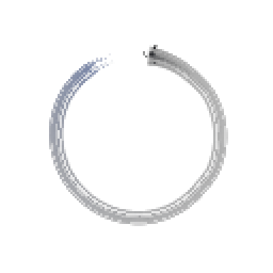
| Centroid | 2.23 (1.74–3.71) |
|---|---|
| Movement | 0.0062 |
| Glow / Motion / Memory | 0.34 / 0.09 / 0.03 |
| Brush, median (p90) | 5.3 (5.5) cells |
| Paint at the end | 229, 8% wet |
Soft against hard strikes
C D E F G F E D, a note every 0.6 s, alternating velocity 30 and 127, at Strike 100 so a hard strike’s impact is full.
Spatter is drops now, not strokes: a ragged blot where the brush lands, larger than the stroke, and round it drops of every size - many fine specks, a few large blots - thrown further and bigger the harder the strike, smaller the further they fly, some - the larger ones likelier - drawn out into a teardrop whose tail points away from the blot, every edge smooth and rounded. The soft strikes throw nothing (under about a third of a full impact, nothing). Without, none at all. As first built, a scatter of small strokes all alike. The close-ups are round the first hard strike.

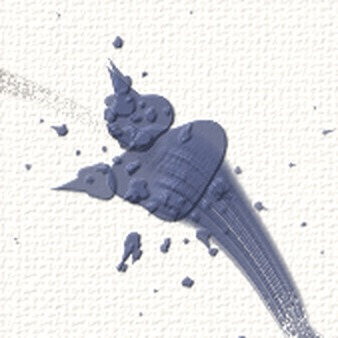
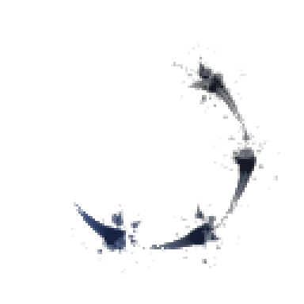
| Centroid | 3.01 (2.78–3.52) |
|---|---|
| Movement | 0.0026 |
| Glow / Motion / Memory | 0.49 / 0.34 / 0.00 |
| Brush, median (p90) | 4.1 (6.8) cells |
| Paint at the end | 461, 32% wet |
| Drops of spatter | 284 |

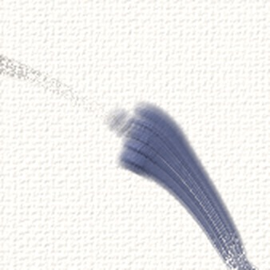

| Centroid | 3.15 (2.96–3.68) |
|---|---|
| Movement | 0.0033 |
| Glow / Motion / Memory | 0.37 / 0.32 / 0.00 |
| Brush, median (p90) | 4.1 (6.8) cells |
| Paint at the end | 272, 34% wet |
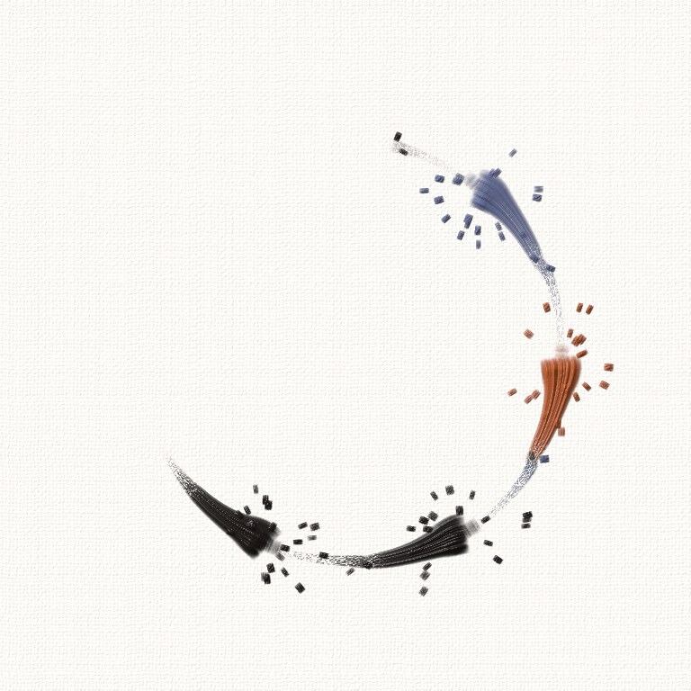
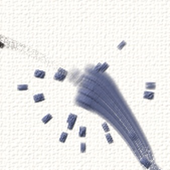
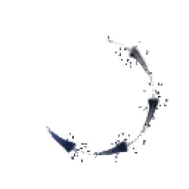
| Centroid | 3.00 (2.79–3.53) |
|---|---|
| Movement | 0.0029 |
| Glow / Motion / Memory | 0.42 / 0.34 / 0.00 |
| Brush, median (p90) | 3.8 (6.7) cells |
| Paint at the end | 340, 32% wet |
Aftertouch leaned on
A slow pad, A3 E4 A4 held six seconds. Channel pressure rises to full over a second, holds, and lets off over a second.
Unchanged, as you asked: the strokes widen and press in while the keys are leaned on, smearing the wet paint they cross. Without, the same width throughout. As first built is the same brush.
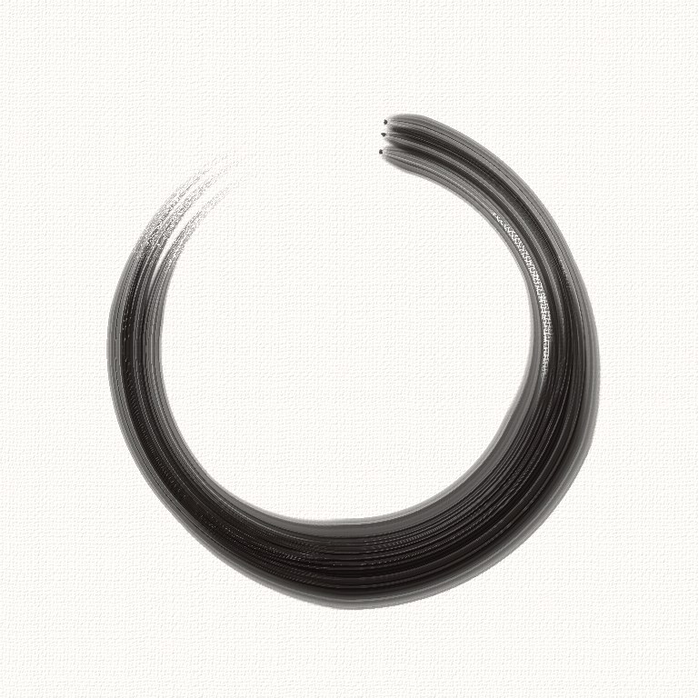

| Centroid | 1.73 (1.22–2.76) |
|---|---|
| Movement | 0.0027 |
| Glow / Motion / Memory | 0.63 / 0.60 / 0.25 |
| Brush, median (p90) | 6.4 (12.0) cells |
| Paint at the end | 1732, 22% wet |
| Drops of spatter | 3 |
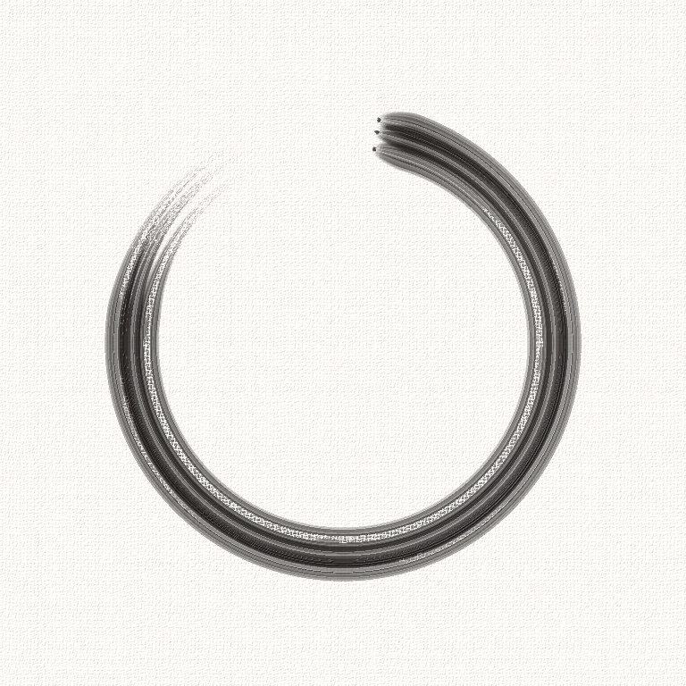
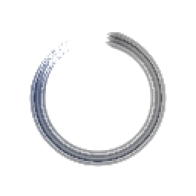
| Centroid | 1.73 (1.50–2.76) |
|---|---|
| Movement | 0.0052 |
| Glow / Motion / Memory | 0.53 / 0.30 / 0.19 |
| Brush, median (p90) | 6.0 (6.1) cells |
| Paint at the end | 605, 14% wet |
| Drops of spatter | 3 |
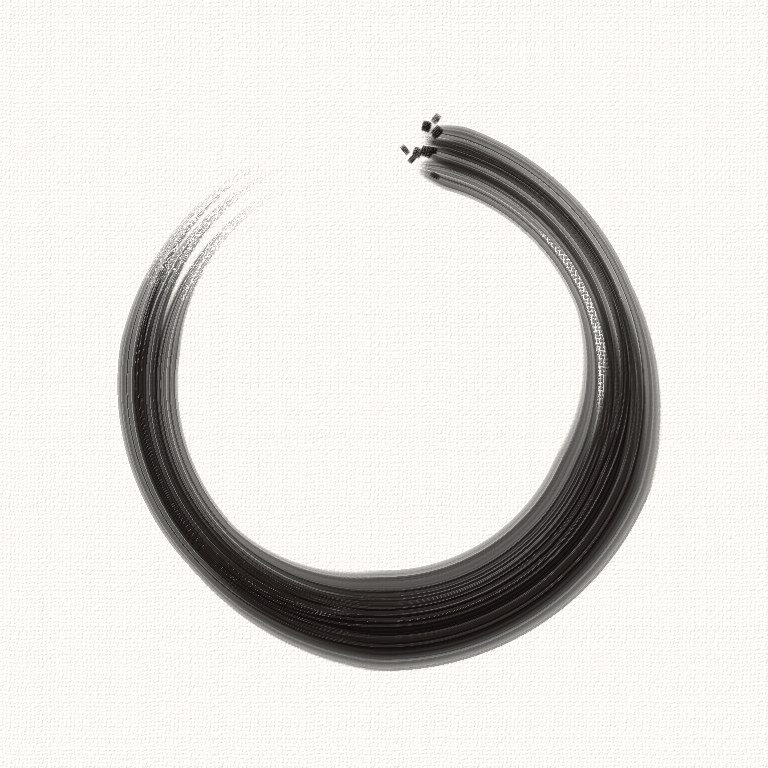
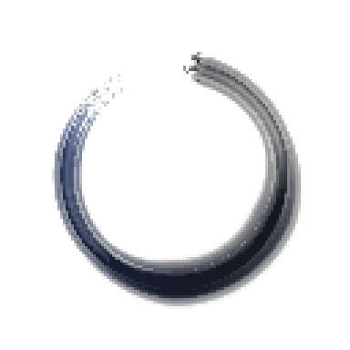
| Centroid | 1.71 (1.22–2.67) |
|---|---|
| Movement | 0.0027 |
| Glow / Motion / Memory | 0.63 / 0.60 / 0.25 |
| Brush, median (p90) | 6.4 (12.0) cells |
| Paint at the end | 1728, 22% wet |
Made by render.py (with render.cpp, the core playing each phrase, beside this
page) and page.py. Every number is in results.json. The brush is deafened with
PaintParams::hears and spatterAt, which exist for this and for the tests’ nulls;
in the instrument the brush hears everything.